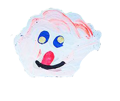
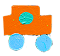

Malmö Konsthall | September 10 – November 27, 2011
The Japanese artist Misaki Kawai (b. 1978) works with painting, drawing, sculpture, installations and artists’ books. Her works are filled with colourful characters, who appear to come from the dream world of film, music and comics. Strongly influenced by today’s consumer society – of which she herself is a part – Kawai fuses East with West, humour with seriousness and dreams with reality. The result is both chaotic and exuberant.
Misaki Kawai has been drawing since she was very young, and the drawn line forms the basis of her work. She is influenced by the Japanese manga style called heta-uma, which means “bad-good” or bad technique with good result. It refers to the minimizing of conscious decision making or intentional stylization while drawing – a sort of uninterrupted connection from the brain to the hand. In her paintings, she uses a simple drawing line filling the areas with clear, strong colour to create and intensify moods and emotions in her pictures. There is a happiness and spontaneity. We encounter the same characters, animals and people who appear in her installations. Kawai deliberately works on the border to the banal, using an understated humour that indirectly reminds us of how our society functions.
In her playful installations, Kawai creates imaginative worlds in materials such as papier-mâché, wood, cardboard and fabric. These doll house-like universes feature an incredible wealth of detail. A recurring theme bas been space and the futuristic worlds of tomorrow. All the colours, shapes, textures and patterns give her installations almost a kaleidoscopic effect, and it is difficult to withstand this hubbub of sweet, dream-like fantasy beings and colourful constructions. She always depicts places filled with movement, action and events. Kawai has said that she admires the action film star Jackie Chan because he is unique and cool. He is her sensei – her master.
For the exhibition at Malmö Konsthall, Misaki Kawai has created completely new works, including a large sculptural installation. She has been working on site in Malmö since June. The exhibition catalogue will be in the form of a numbered, limited edition long-sleeved T-shirt.// This summer Misaki Kawai made an art project together with teenagers in Rosengård. She also participated at Malmö Festivalen at Hamngatan with a skate ramp that she transformed into an installation, and she will exhibit at LOYAL in Malmö between September 10 and October 29. x
Misaki Kawai has been drawing since she was very young, and the drawn line forms the basis of her work. She is influenced by the Japanese manga style called heta-uma, which means “bad-good” or bad technique with good result. It refers to the minimizing of conscious decision making or intentional stylization while drawing – a sort of uninterrupted connection from the brain to the hand. In her paintings, she uses a simple drawing line filling the areas with clear, strong colour to create and intensify moods and emotions in her pictures. There is a happiness and spontaneity. We encounter the same characters, animals and people who appear in her installations. Kawai deliberately works on the border to the banal, using an understated humour that indirectly reminds us of how our society functions.
In her playful installations, Kawai creates imaginative worlds in materials such as papier-mâché, wood, cardboard and fabric. These doll house-like universes feature an incredible wealth of detail. A recurring theme bas been space and the futuristic worlds of tomorrow. All the colours, shapes, textures and patterns give her installations almost a kaleidoscopic effect, and it is difficult to withstand this hubbub of sweet, dream-like fantasy beings and colourful constructions. She always depicts places filled with movement, action and events. Kawai has said that she admires the action film star Jackie Chan because he is unique and cool. He is her sensei – her master.
For the exhibition at Malmö Konsthall, Misaki Kawai has created completely new works, including a large sculptural installation. She has been working on site in Malmö since June. The exhibition catalogue will be in the form of a numbered, limited edition long-sleeved T-shirt.// This summer Misaki Kawai made an art project together with teenagers in Rosengård. She also participated at Malmö Festivalen at Hamngatan with a skate ramp that she transformed into an installation, and she will exhibit at LOYAL in Malmö between September 10 and October 29. x



